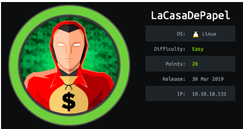

- nmapAuto
- vsftp 2.3.4 exploit
- initial foothold
- dl cert
- generate client key
- certificate sign request data
- convert to PKCS12
- add key to firefox certificate store
- add ca.crt to firefox
- refresh page
- Local file Inclusion Vuln
- ssh into professor acct
- user.txt
- privesc
- user/root
- lessons learned
LaCasaDePapel
